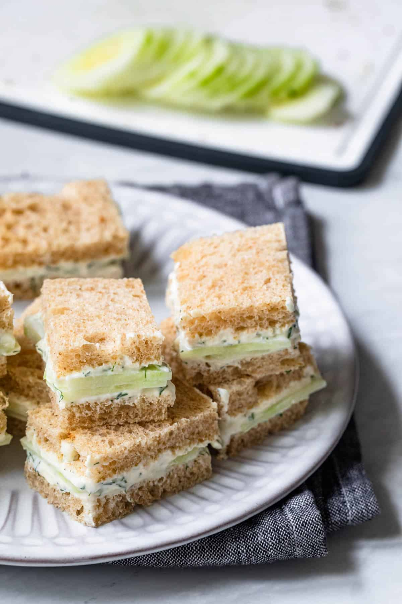

Cucumber Sandwiches

Description
One of my favorite simple lunches are cucumber sandwiches! So quick and easy to make with accessible ingredients, they are wonderfully refreshing and elegant enough to serve to company. Made with seasoned Greek yogurt, they are truly delightful!
Ingredients
- 4 ounces low fat cream cheese
- 2 tablespoons Greek yogurt
- 1 tablespoon lemon juice
- 1 tablespoon fresh dill minced
- 1/4 teaspoon black pepper
- 4 slices whole wheat sandwich bread
- 1 small or 1/2 big cucumber thinly sliced
Instructions
- In a small bowl, whisk together the cream cheese, Greek yogurt, lemon juice, dill and black pepper.
- Lightly toast the bread. Spread the mixture on all of the bread slices. Lay the cucumber slices over the cream cheese mixture, and top with the remaining bread slices.
- Remove the crust, if desired, and cut each sandwich into four smaller squares. Serve immediately or refrigerate for up to 24 hours.
Notes
Storage: Store the sandwiches in an airtight container in a fridge fro up to 24 hours.